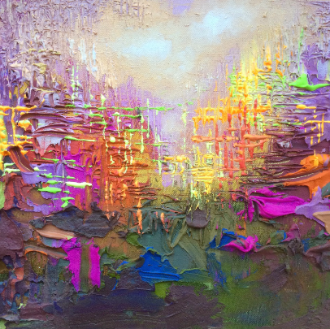

Autumn Way
Artist: Penny Mathew
Created: January 2003
Style: Abstract Pop Art
Medium:Acrylic on Canvas / Watercolor
Dimensions: Size 4, 30cm long
"Autumn Way" captures the trees form an archway of brilliant reds, oranges, yellows, and greens, their leaves resembling dabs of paint on a canvas. The path below, wet from recent rain, reflects the kaleidoscope of colors from above. In the center, a lone figure walks with an umbrella, dwarfed by the towering trees and immersed in the dazzling explosion of color. The scene feels alive, as if each brushstroke vibrates with the energy of the changing seasons, blending realism with an abstract, impressionistic quality.
Price: $648 / €650
Availability: In Stock
Related Artworks
